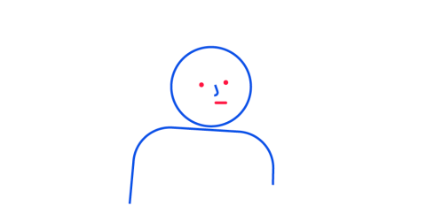
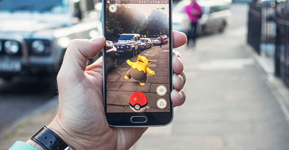
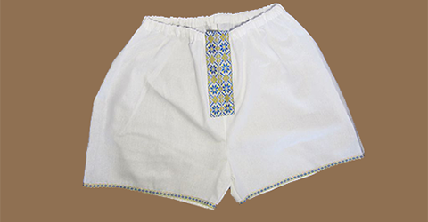
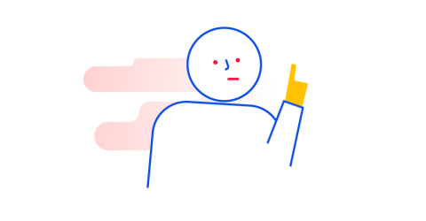

Перевірте свої здібності у комунікаціях та заробітку на повітрі
Дізнайтеся, які ваші сильні та слабкі сторони у продажах і комунікаціях з клієнтами.
Бонус тесту — поради, що зроблять вас продавцем 80-го рівня.
Пройти тест
Питання 1 з 5Клікніть на обраний варіант
Ви привезли львівське сміття до іншого міста. Мешканці перекрили дорогу. Ваші дії?
Запитаю, яке місто ці люди не люблять. Пообіцяю відвезти туди наступну партію.
Переконуватиму, що це сміття не токсичне, самі об’їдки для котиків.
 Скажу, нехай пропустять, або відвантажу прямо на них, бо виходу не маю.
Поїду до сміттєсортувальних підприємств, умовлю забрати сміття за коробку цукерок.
Питання 2 з 5Клікніть на обраний варіант
Ви – мер Києва. Розумієте, що метро на Троєщину – надто складно. Що зробите?
 Обладнаю міст через Дніпро Wi-Fi, а метро пообіцяю провести хоча б на Борщагівку.
Відкрию велосипедну школу. Переконуватиму, що ровери – здоровіше за метро.
Проведу опитування щодо найкращого альтернативного варіанта і реалізую його.
Скажу відверто: грошей на метро немає, користуйтеся іншим транспортом.
Питання 3 з 5Клікніть на обраний варіант
Як діятимете, щоб Нідерланди схвалили асоціацію між Україною та ЄС?
Проведу виставки українських інновацій. Не ходитимуть – роздам київську перепічку.
Повідомлю їм про старт ринку землі в Україні. На Чорнобильську зону – знижки.
 Розповім про надбання українців. Наприклад, що ми робимо з конопель ще й одяг.
Перелічу плюси асоціації. Не спрацює – переконуватиму українців, що ЄС нам не потрібен.
Питання 4 з 5Клікніть на обраний варіант
Замовник хотів «те, сам не знав, чого». Результатом невдоволений. Ваші дії?
 Від початку не візьмуся за справу без детального брифу: марную час.
Спробую продати свою роботу конкурентам замовника.
Підкреслю переваги мого варіанта і переконуватиму, що він класний і сучасний.
Розпитаю, що саме не влаштувало, і спробую переробити.
Питання 5 з 5Клікніть на обраний варіант
Ви маєте продати цемент компанії, що ремонтує Шулявський міст. До кого звернетеся?
Пробиватимусь одразу на прийом до мера Кличка.
 Доведу виконробу, що мій цемент найкращий, і він сам умовить керівництво.
Доведу виконробу, що мій цемент найкращий, і він сам умовить керівництво.
Подамся на тендер з найнижчою ціною за мішок.
До відділу закупівель. Вони володіють таємними знаннями про потреби і бюджети.